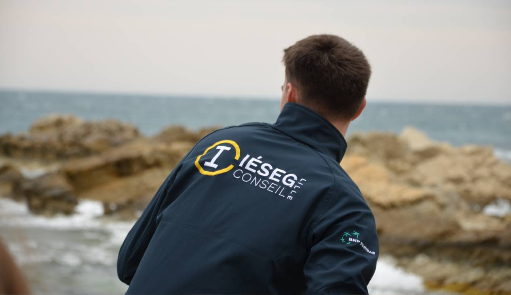

Hello la team ICL !
Moi c'est Valentin et je suis hyper motivé pour rejoindre la JE l'année prochaine en tant que Respo Consulting. J'ai hâte de (enfin j'espère) vous voir aux entretiens ;) Je vous laisse avec ma CB.
Les points essentiels
Qui suis-je ?
Je suis en troisième année à l'IESEG, grand voyageur à mes heures perdues (Thaïlande, Vietnam, People...), je suis aussi sportif (objectif Marathon de Lille) et je suis cool aussi en vrai
Mes expériences Asso
Après trois ans à l'IESEG, j'ai enfin eu assez d'assos pour pouvoir avoir un nom facebook presque aussi long que le grand Valentin Carpentier: Valentin Otd Ctr Bdj AEIL pas fédé pas encore ICL Rozuel
Respo Consulting
En premier choix, le poste de Respo Consulting m'intéresse beaucoup pour pouvoir être en contact direct avec les clients et proposer des solutions concrètes à leurs problèmes
Respo Suivi d'études
En 2e choix je suis aussi intéressé par le poste de Respo Suivi d'études. Je trouve l'étape d'exécution du contrat hyper intéressante et concrète.
Qui suis-je ?
Salut ! Moi c'est Valentin. Pour ceux qui ne me connaissent pas encore (presque vous tous en vrai haha) je suis quelqu'un d'organisé mais aussi de sociable. Comme vous pouvez le voir sur les photos (avec des personnes qui m'ont pris en stop au milieu de la Thaïlande), je suis passionné de sport, de voyages et de rencontres en dehors de mon espace de confort (pratique pour un respo consulting).
J'ai également le sens du travail grâce aux différentes expériences assos que vous pourrez voir dans une des pages du site. Après 3 ans à l'IESEG, j'ai toujours aimé m'impliquer à fond dans de nouveaux projets et apprendre grâce à eux.
Mes expériences Asso
IESEG Outdoor
Arrivé en 1ère année en membre sponsor, j'ai eu la chance de pouvoir finir président de l'asso et organiser magnifique évent qu'est la Flo'werun (j'espère que vous êtes venus🧐) pour lequel nous avons négocié un partenariat avec Finishers pour battre le record de ventes (youpi)
Cosanostr'Art
Bon on a perdu... mais en tant que membre sponsor j'ai pu bosser mes pitchs de démarchage comme un grand et surtout bosser mon adaptabilité pendant ces magnifiques campagnes où le sommeil semble être optionnel
Bureau des Jeux
6 mois au BDJ. Asso pas très corpo c'est vrai mais j'ai appris à organiser des évents et gérer les galères avec réactivité (big up à la soirée appartathon)
AEIL
Surement l'asso qui m'a le plus appris. En tant que membre du bureau (comptable) j'ai compris ce que c'est de ne plus avoir de vie et d'avoir un tel qui ressemble de plus en plus à une guirlande à force de recevoir des notifs. Ça m'a permis d'apprendre à gérer les priorités et SURTOUT les imprévus en plus de découvrir la mise en place de plan d'actions, process, stratégie etc.
Respo Consulting
Après m'être renseigné auprès de plusieurs de vos anciens et actuels membres de la JE, ce qui me plait vraiment dans ce poste c'est d'être proche des clients et de comprendre leurs attentes pour pouvoir imaginer à partir de 0 ou presque une prestation complète (Désolé je vous ai volé la photo d'illustration sur votre site haha)
Pourquoi ce poste :
- Management : Via mes précédentes expériences asso, j'ai déjà eu l'occasion de manager 21 trésoriers associatifs, et de mener à bien des projets de tailles variables en équipe.
- Relations clients : J'ai déjà eu l'occasion de travailler mes capacités d'argumentation de vente via mon stage chez Hermès en 2e année, et de bosser mes compétences de communication avec l'AEIL et ses prestataires.
- Investissement : L'AEIL m'a pas mal appris à bien gérer mon temps mais aussi à consacrer un temps conséquent pour un projet de manière quotidienne et je suis conscient de l'investissement que demande la Junior Entreprise
- Ecoute : J'aime prendre le temps d'écouter les gens et de comprendre leur fonctionnement (tellement que COMED m'appelle à 8h du mat le week end). Je pense que c'est un point clé pour être respo consulting et bien comprendre les attentes du client.
Respo Suivi d'études

Le poste de Respo Suivi d'études est sûrement l'un des postes le plus en contact avec les intervenants et les clients ce qui me plait énormément. Le fait dêtre la clé finale de la satisfaction client rend le poste très concret et correspond à la vision que j'ai de la JE.
Ma vision du poste :
- Mise en oeuvre : Au delà d'imaginer un projet, j'ai toujours aimé partir de rien pour arriver à un résultat concret qui me plait. Ce que plait réellement c'est de voir le projet prendre vie au fur et à mesure et devenir viable.
- Formation : Une partie importante du travail de Respo est aussi la formation. L'idée de travailler en équipe et d'aider les chargés à prendre de l'assurance et devenir de plus en plus autonome est un des aspects qui me motive.
- Après-vente : Le fait de pouvoir fidéliser des clients grâce à une mission bien réalisée et en gardant le contact avec eux est un point je trouve hyper intéressant.